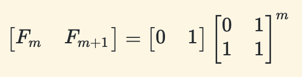
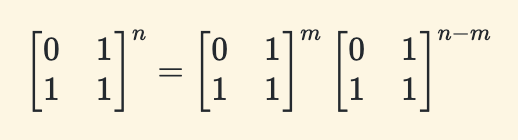

读书笔记之《Algorithms》3
~~ 更新于 -> 2020-11-05
Dynamic Programming（动态规划）
第一个简单的动态规划算法
大学时没上过课，都是闷着自学的；把好多问题都想复杂了，原来用 for 循环迭代填充斐波那契数组就是一个动态规划算法。
结合快速求解矩阵幂运算（O(log(n))）计算斐波那契数
)）计算斐波那契数")
重点就在左边矩阵的 n 次幂上！通过递归可以将矩阵乘法的次数降到 log(n) 次（第一章中提供了两种两数相乘的参考算法，均用到递归思想）。实际上，迭代用到的基本运算是加法（O(n)，n 为数字位数），而矩阵运算中使用了更为昂贵的乘法（目前最快的两数字乘法运算的时间复杂度为 O(n log(n)，n 为数字位数)，发现于 2019 年）；所不同的是迭代的循环次数为 n，而计算矩阵的幂的递归次数为 log(n)；所以，这个递归算法比迭代算法快一丢丢，时间复杂度为（Ω(n)，理由是 O(n log(n) log(n)) < O(n^2)，如下图所示）。
那么接下来在设计递归算法之前，还需要若干步推导。从 figure 1 看出，我们要设计一个函数，返回值可以是一个元组 (F(n-1), F(n))；递归式可以设计为 T(n) = T(n/2) + O(n)，这样效率最高。有了目标，n/2 是特殊情况，不妨从普通情况开始推导：
首先，这个算法还有一种行向量的表达方式：  ，另外幂运算的特点是  。所以，可以得到 F(n)的计算公式：
有了 figure 2 中这个重要公式后，我们分别假设 n=2t-1,m=t-1 和 n=2t,m=t，得到：
好了，公式部分到此为止，接下来就是代码实现：
# F(n-1), F(n)
def FastRecFibo(n):
if n == 0:
return 1, 0
if n == 1:
return 0, 1
m = math.floor(n / 2)
hprv, hcur = FastRecFibo(m) # F(m-1), F(m)
prev = hprv * hprv + hcur * hcur # F(2m-1)
curr = hcur * (hprv + hprv + hcur) # F(2m)
next = prev + curr # F(2m+1)
if n % 2 == 0:
return prev, curr
else:
return curr, next
Pattern（Smart Recursion）
Dynamic programming is not about filling in tables. It’s about smart recursion!
动态规划是剔除重复之后的递归算法。开发一个动态规划算法需要经历两个阶段：
将问题用递归的思路解决出来：
- 精确描述问题
- 用递归思路解决
虽然动态规划算法并不是填表格或者数组（像前面的例子，用数学的方法可以简化掉数组），但是由于我们处理的数据大概率是数组或者表格，所以在这个阶段要决定一个递归解决问题的顺序，关系到如何填表格或者数组：
- 定位子问题
- 确定一种数据结构来存储所有子问题的解，通常是数组或表格
- 判断子问题间的依赖关系，画出图，用公式描述
- 确定解子问题的顺序：Base Case 最先，然后是依赖 Base Case 的子问题，一直接下去，直到解决最初最顶层的问题；说到顺序，填数组可能容易理解，其实填表格也是一样，一行接着下一行，且往往最后只需要填出一个三角矩阵即可
- 分析时间复杂度和空间复杂度
- 写下来：往往是有规律可循的
Warning（Greed is Stupid）
Greedy algorithms never work! Use dynamic programming instead!
You will not receive any credit for any greedy algorithm, on any homework or exam, even if the algorithm is correct, without a formal proof of correctness.
Whenever you write—or even think—the word “greeDY”, your subconscious is telling you to use DYnamic programming.
一次失败的尝试
在 子集和问题 中，如果参数 和 特别大，那么用动态规划时需要填充的表格也会特别大；算法效率明显不高。我看到这里的时候，想能不能用 Map[] 存储来存储，结果失败了。
# def FastSubsetSum(arr, sum):
# arrLen = len(arr)
# S = []
# for i in range(arrLen + 1):
# S.append(dict(t0=True))
# i = arrLen - 1
# while i >= 0:
# S[i][] = S[i+1][] or S[i+1][]
# i -= 1
# return S[0]['t{}'.format(sum)]
所以，有时候回溯比动态规划要好一些：
In the 1967 research memorandum(!) where he proposed memo functions, Donald Michie wrote, “To tabulate values of a function which will not be needed is a waste of space, and to recompute the same values more than once is a waste of time.”
书中的典型案例
- 求斐波那契数
- 断句分词
- 编辑距离
- 子集之和
- 最大独立点集合（这个坑：有一张无回路的图，也就是一颗树啦；独立点集合就是集合中任何两个点之间没有边相连）
（陆续完善……）
书中习题
（陆续完善……）
同一本书的文章集
- Preface-&-Introduction
- Recursion
- Backtracking
- 回到开头
- Greedy Algorithms
- Basic Graph Algorithms
- Depth-First Search
- Minimum Spanning Trees
- Shortest Paths
- All-Pairs Shortest Paths
- Maximum Flows & Minimum Cuts
- Applications of Flows and Cuts
- NP-Hardness
⚠️ 请先安装一款邮件软件（部分浏览器可能不支持，请使用设备默认浏览器打开本页面）